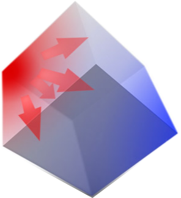
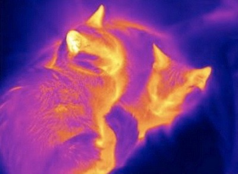

- Теплопроводность 
- Конвекция
- Свободная или естественная
- Вынужденная


- Тепловое излучение 
Теплопроводность
Самым простым механизмом как в принимании, так и в физическом описании является теплопроводность. Это явление возникает в телах любого агрегатного состояния,но большую значимость имеет только в твердых телах. Зависит от свойств материала объекта и температуры с одной стороны и другой.
Нагревая тело, увеличивается кинетическая энергия молекул (они быстрее начинаю двигаться). С большой скоростью одни молекулы сталкиваются с другими, передавая часть энергии и так далее во всех направления тела.
На примере приведенной картинки с кубом видно, как этот процесс протекает.
Конвекция
Конвекция - процесс переноса теплоты вместе с массой. Например, нагретый воздух, который поднимается вверх от каких то теплых объектов, а холодный вниз.Более сложное физическое явление. Интенсивность этого процесса тоже зависит от свойств тела и температуры, но также от размеров объектов, того как она расположены вертикально или горизонтально, близко или далеко.
В общем это можно назвать конфигурацией пространства.
Бывает свободная конвекция и вынужденная. По картинкам понятно, что одна протекает в своем собственном темпе, а вынужденная в темпе, который определяется оборудованием, например, скоростью вращения винта вентилятора.
Излучение
И последний механизм самый сложный, особенно в формулах. Как я говорил раньше, молекулы сталкиваются, при этом часть энергии превращается в электромагнитные волны, которые в сумме дадут излучение.Процесс производства электро- и тепловой энергии

Основное оборудование на тепловых электрических стация:
- Котел
- Перегреватель
- Турбина
- Электрогенератор
- Конденсатор
- Насос основного конденсата
- Подогреватели конденсата
- Насос питательной воды
значениями давления и температуры пар поступает в турбину 2. Пар расширяется, давит на лопатки турбины и начинает ее
крутить. Турбина соединена с электрогенератором 4. Генератор имеет две основные части: статор и ротор. Ротор
вращается вместе с турбиной, а его взимодействие со статором генерирует электричество. Большая часть пара идет в
конденсатор 5, где полностью превращается в воду. Насос 6 перекачивает данный конденсат до теплообменника 7. Другая
часть пара отбирается в процессе расширения в турбине для нагрева конденсата. Таким образом повышается экономичность
станции. При смешении этих частей получается питательная вода для котла. Насос 8 докачивает питательную воду до котла. Цикл завершен.